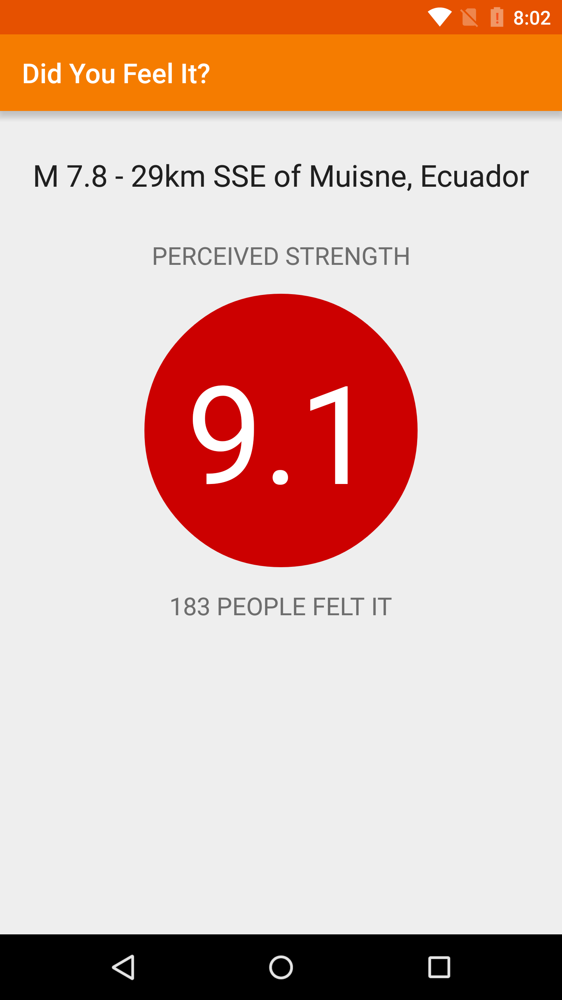

12. Handle Empty or Null Cases
Handle Empty or Null Cases
I’d like to point out that our code is currently written for the best case scenario. We assume that the EarthquakeAsyncTask is called with inputs that we expect and performs the network request without any errors.
What if…
- A future teammate, who works on this app, changes the code and tries to execute the EarthquakeAsyncTask with 0 input parameters? Our app would crash because it assumes there is at least 1 String input to the task.
- There’s an internal server error with the computers at USGS and the response cannot be parsed into an Event object? Our app would try to update the UI with an invalid or null Event object.
We try to future-proof our app so that we or any other developer who touches the code, won’t accidentally cause bugs or crashes in the app. In order to do this, we need to minimize the assumptions about the code that is written outside of the current class, outside of our current control.
Our code becomes more robust if we can accept any inputs (0 inputs, 1 input, 2 inputs, etc..) or handle any unexpected behavior (server gives valid or invalid response), and handle it gracefully without crashing the app.
To this end, please make the following modifications to the “Did You Feel It?” app to handle the empty or null cases in the EarthquakeAsyncTask.
In the doInBackground method, check if the urls array has at least 1 entry and that the first entry is not null. If the array is length 0 or the first entry is null, then bail out of the method early by returning null. We need to return null because an object is expected as the return value. If there 1 valid String URL, then proceed with fetching the data.
protected Event doInBackground(String... urls) {
// Don't perform the request if there are no URLs, or the first URL is null.
if (urls.length < 1 || urls[0] == null) {
return null;
}
Event result = Utils.fetchEarthquakeData(urls[0]);
return result;
}In the onPostExecute method, return early if there is no earthquake result.
protected void onPostExecute(Event result) {
// If there is no result, do nothing.
if (result == null) {
return;
}
updateUi(result);
}Here’s the complete EarthquakeAsyncTask class declaration.
/**
* {@link AsyncTask} to perform the network request on a background thread, and then
* update the UI with the first earthquake in the response.
*/
private class EarthquakeAsyncTask extends AsyncTask<String, Void, Event> {
/**
* This method is invoked (or called) on a background thread, so we can perform
* long-running operations like making a network request.
*
* It is NOT okay to update the UI from a background thread, so we just return an
* {@link Event} object as the result.
*/
protected Event doInBackground(String... urls) {
// Don't perform the request if there are no URLs, or the first URL is null.
if (urls.length < 1 || urls[0] == null) {
return null;
}
Event result = Utils.fetchEarthquakeData(urls[0]);
return result;
}
/**
* This method is invoked on the main UI thread after the background work has been
* completed.
*
* It IS okay to modify the UI within this method. We take the {@link Event} object
* (which was returned from the doInBackground() method) and update the views on the screen.
*/
protected void onPostExecute(Event result) {
// If there is no result, do nothing.
if (result == null) {
return;
}
updateUi(result);
}
}When you compile and run the app, it should still look the same.

To browse the complete and final state of the “Did You Feel It?” app on GitHub, click here.